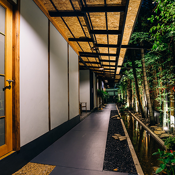
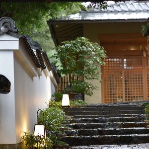
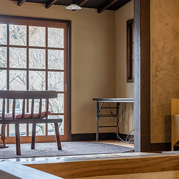
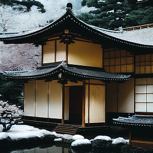
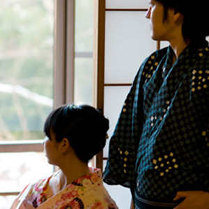
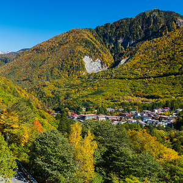

当館は、黒川温泉を流れる田の原川沿いに佇む宿でございます。
この川と周囲を取り囲む山々が、宿全体に四季折々の彩りを添えてくれます。
春の桜、初夏の新緑と蛍、秋の紅葉、冬の美しい雪景色、そして川のせせらぎ。
春夏秋冬、晴れの日も雨の日も、日々表情を変える自然を身近に感じていただけることと思います。
お越しいただく皆さまに心より感謝を申し上げ、
お客さまお一人おひとりに丁寧なおもてなしを心がけてまいります。
花玄庵を、今後とも何卒よろしくお願い申し上げます。
-

-

-

-

-

-
